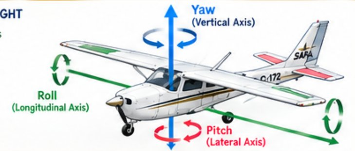
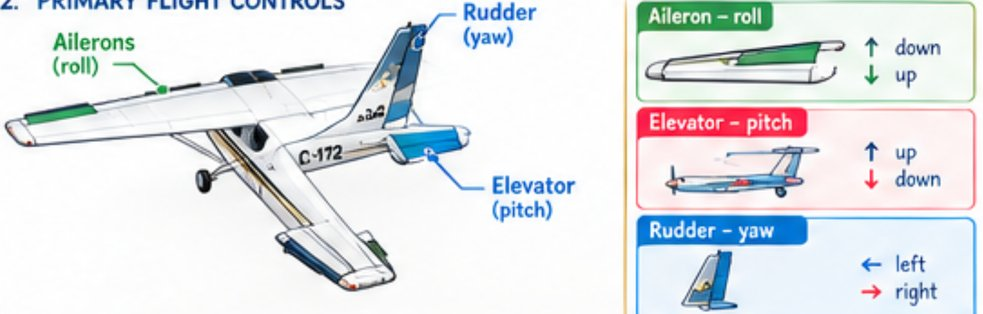
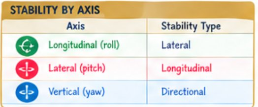
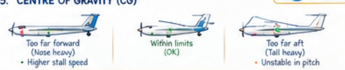
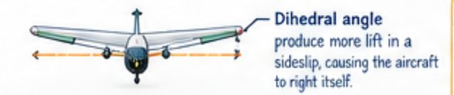
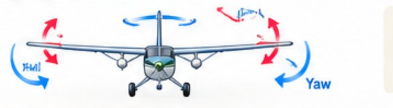
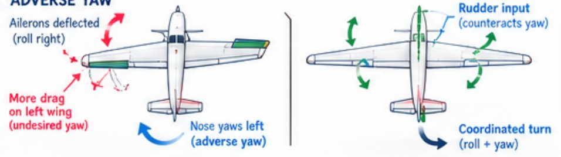
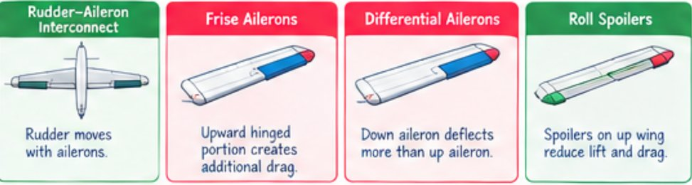
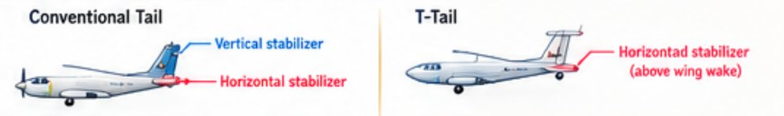
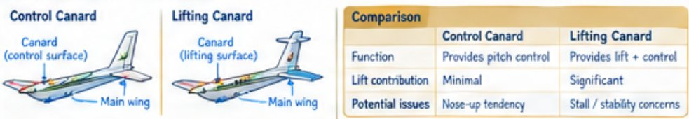

The three axes, what "stable" means, how each part of the aircraft keeps it steady, and what goes wrong when it doesn't. Read the notes, then switch on Study mode to test yourself from the cue questions.
Name each axis, the motion about it, the control surface, and the part that gives stability.
All cross at the CG

Say the memory line out loud until it's automatic — nearly every question in this module comes back to this table. The axis names describe the line; the stability names describe which way the aircraft is being held steady. For the whole picture on one sheet, open the Stability & Control Map.
What does "stability" describe, and how is it different from control?
Behaviour, not an axis
Stability and control pull against each other. A very stable aircraft (a trainer, an airliner) flies hands-off but is slower to manoeuvre. A less stable one (an aerobatic aircraft) turns quickly but needs constant attention from the pilot.
What is the difference, and what do positive, neutral and negative mean for each?
First move · Over timeFighters are built close to neutral so they turn fast; trainers and airliners are strongly positive so they fly hands-off. You can have positive static but negative dynamic stability: the nose starts back toward level every time, but each swing is bigger than the last.
What provides it, and how does the tail balance the wing?
Horizontal stabilizerBecause the tail pushes down, it is actually "negative lift" the wing has to make up for — which is why a forward CG (more tail down-load needed) raises the stall speed. Why does the wing pitch nose-down in the first place? Lift acts behind the CG, and a cambered (curved) wing also makes its own nose-down twist. The tail's down-load cancels both. Canard designs (Section 10) flip this: the front surface lifts up instead.
What happens with a CG too far forward, too far aft, or off to one side? Can it cause a stall?
Fwd = heavy · Aft = unstable · Side = drag
An aft CG is the more dangerous of the two because it can make the aircraft unrecoverable from a stall or spin. A forward CG mostly costs performance. Either way the aircraft is outside its certified envelope and must not fly.
How does dihedral level the wings after a disturbance?
Wings · Dihedral
Too much lateral stability is a problem too — it fights the pilot in turns and, combined with weak directional stability, causes Dutch roll (Section 7). High-wing aircraft often need little or no dihedral because the pendulum effect already does the job.
What provides it? Why is the fin sometimes offset?
Vertical stabilizerThe propeller throws air back in a corkscrew that hits one side of the fin, which is why single-engine aircraft yaw left on take-off and need right rudder. An offset fin (or an offset engine mount) builds the correction in at cruise power.
What causes Dutch roll, and how is it fixed?
Dihedral vs fin
Most swept-wing jets lean toward Dutch roll (sweep adds a lot of dihedral effect), so they carry yaw dampers. Most light aircraft lean slightly spiral — which is safer, because a spiral is slow and easy to catch.
Why does the nose yaw the wrong way when you roll?
Drag on the rising wing
The pilot's fix is coordinated rudder — a touch of right rudder with a right roll. The designer's fixes are in the next section. Gliders, with long wings and big ailerons, show adverse yaw most strongly.
Name the four design fixes and how each one works.
Differential · Frise · Interconnect · Spoilers
Most light aircraft use differential or Frise ailerons (or both). Airliners use roll spoilers plus small ailerons. The interconnect is common on aircraft with strong adverse yaw and light rudder forces, such as some Pipers.
Where does the horizontal stabilizer sit on each, and what are the pros and cons?
Wake · Weight · Deep stall
| Conventional tail | T-tail | |
|---|---|---|
| Pros | Simpler design · lighter | Above wing wake / engine blast · better control at high speed |
| Cons | Can be affected by wing wake | Heavier, more complex · possible deep-stall recovery concerns |
Deep stall is why T-tail aircraft carry stick shakers and stick pushers: once the wing wake blankets the tail, the pilot has no pitch authority left, so the system acts before the aircraft gets there. For an AME the practical difference is structural — a T-tail fin carries bending and twisting loads a conventional fin never sees, so its attachments get close inspection.
Control canard vs lifting canard — and the advantages and risks of a forward surface.
Forward horizontal surface
Both surfaces lifting up is why canard aircraft such as the Rutan designs are so efficient — a conventional tail is dead weight pushing down. The price is careful CG control and the need to make the canard stall before the wing so the aircraft can never enter a deep stall.
Stability is how the aircraft behaves on its own after a disturbance; control is the pilot making it move. An aircraft moves about three axes that cross at the CG — roll about the longitudinal axis (ailerons, steadied by the wings), pitch about the lateral axis (elevator, steadied by the horizontal stabilizer) and yaw about the vertical axis (rudder, steadied by the fin). Static stability is the first move after a disturbance; dynamic stability is what the motion does over time, and aircraft are built to be positive in both. Pitch stability depends on the tail's down-load balancing the wing — and on the CG staying inside its range: forward is heavy (higher stall speed), aft is unstable, and side to side costs drag. Dihedral levels the wings; the fin weathercocks the nose straight. Too much dihedral effect gives Dutch roll (yaw damper), too much fin gives a spiral. Rolling creates adverse yaw from the rising wing's drag, fixed by differential or Frise ailerons, interconnect springs or roll spoilers. Canards put the horizontal surface in front, lifting up instead of pushing down, at the cost of tricky stability.
Pick an answer. You get feedback right away and can try again.
Source: J's SAFA Module 3 Cornell notes (Sections 1 and 2 — the diagrams on this page come from them; updated Oct 15) and the ASYS 245 Module 3 course deck (Stability and Control; Jeppesen Airframe Technician pp. 1-23 to 1-26), condensed. CG and side-to-side balance: FAA Aircraft Weight and Balance Handbook (FAA-H-8083-1). Reference values follow Transport Canada / From the Ground Up.